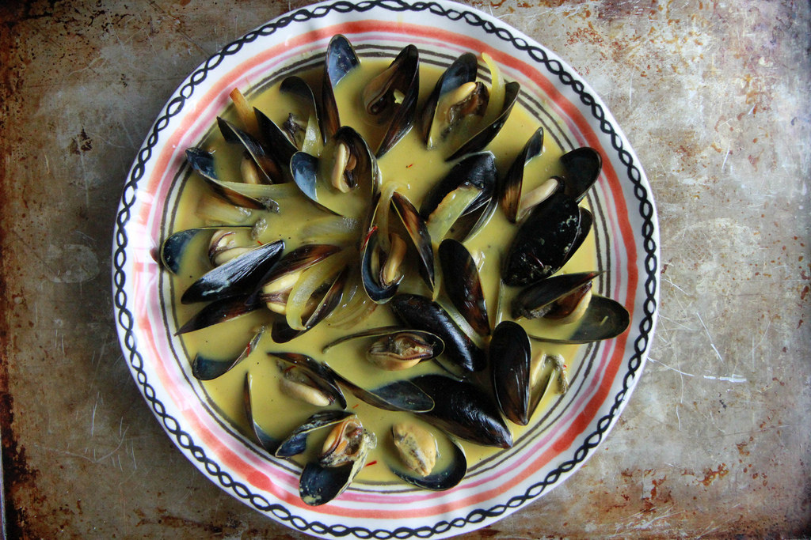

Mussels cooked in a coconut-milk broth infused with saffron and Asian-inspired flavours.
Ingredients
1 tsp peanut oil
1 shallot, chopped
1 long red chilli, deseeded and chopped
1 clove garlic, sliced
1 stalk lemongrass
400ml coconut milk
2 tbsp rice wine
1/4 teason saffron
1 tbsp lime juice
1 tbsp fish sauce
1kg mussels
chopped coriander leaves
Prepare the mussels.
In a large pan, one for which you have a lid, heat the peanut oil over medium-high heat. Cook the shallot, chilli and garlic until they soften and begin to take on some colour.
Cut the lemongrass in half, lengthways, and chop into pieces. (If you don’t intend to strain the soup, make the pieces large enough to be easily retrieved.)
Add the coconut milk, rice wine, lemongrass and saffron, stirring until it comes to a simmer. At this point, you can remove it from the heat and let it infuse for 30 minutes, then pass through a fine sieve or chinois; this isn’t essential, just the way I do it.
When the soup is simmering, add the lime juice and fish sauce. Taste, balancing as necessary.
Add the mussels, pop on the lid and let it simmer away for at least 6 minutes. Take a quick peek before removing from the heat: most, if not all, of the mussels should have opened. If not, just put the lid back on and give them a little more time.
Transfer the mussels to serving bowls with a skimmer or large slotted spoon, pour over the soup and sprinkle with coriander leaves. Serve immediately.